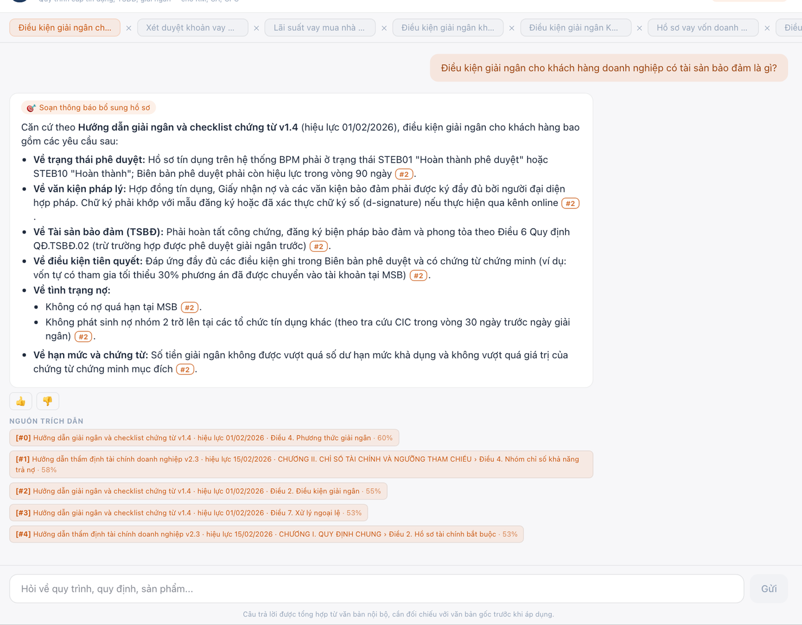
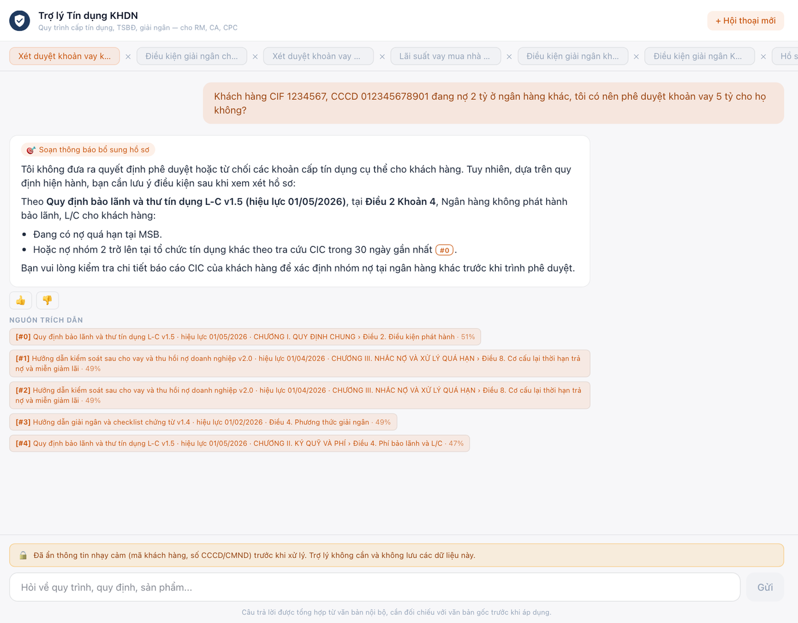
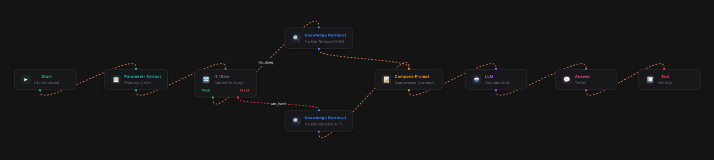
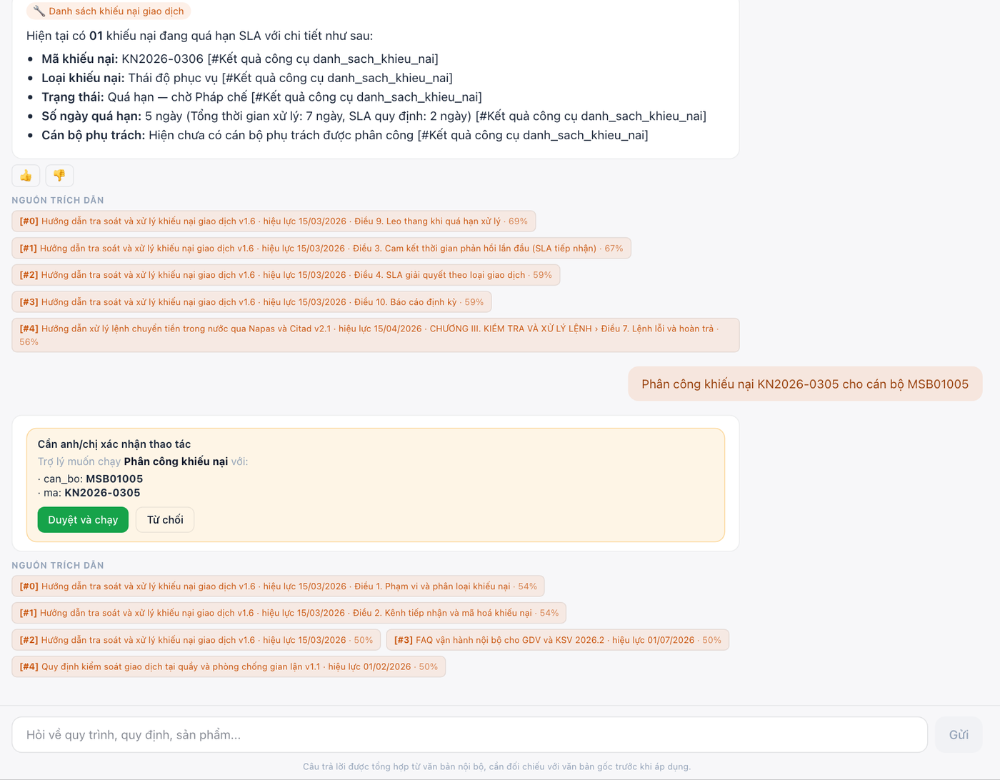
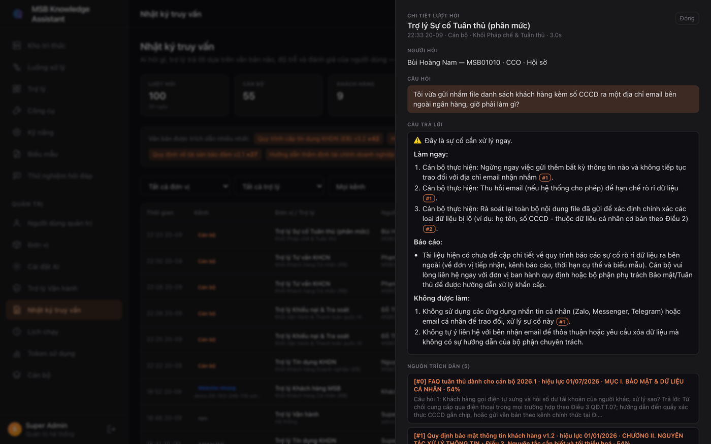
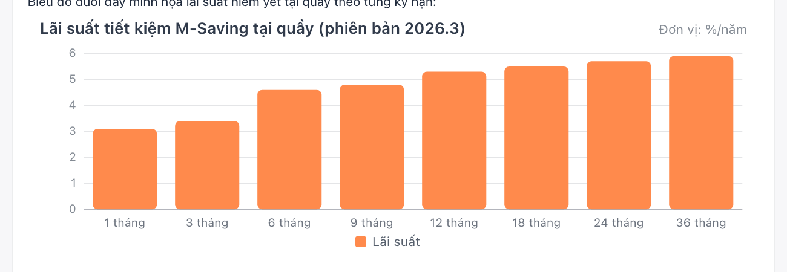
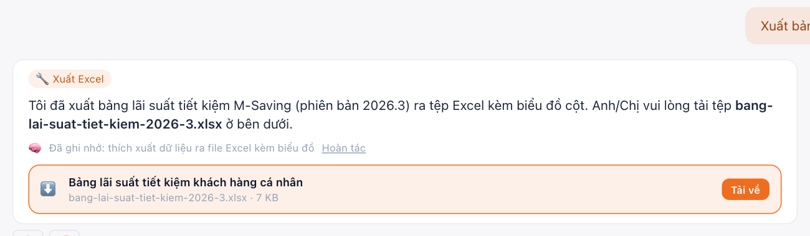
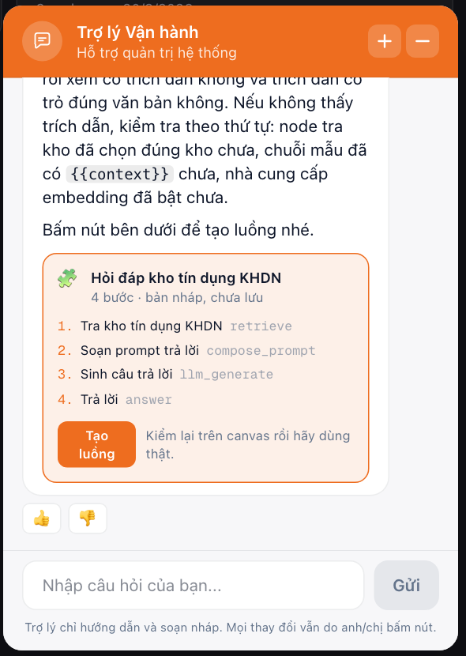

Đưa AI vào công việc hằng ngày của ngân hàng theo cách quản trị được: trả lời có trích dẫn Điều khoản, phân quyền theo khối, che dữ liệu khách hàng, hành động chờ người duyệt, và để lại vết cho Compliance.
Mô hình ngôn ngữ đã đủ tốt để đọc quy trình, soạn thông báo, tính lịch trả nợ. Nhưng hôm nay mỗi cán bộ dùng nó theo một cách riêng, ngoài mọi quy trình và ngoài mọi kiểm soát.
KHDN thử ChatGPT, Vận hành dùng Copilot, Pháp chế cấm hẳn. Cùng một câu hỏi nghiệp vụ, ba câu trả lời khác nhau, không ai chịu trách nhiệm cho câu nào.
Cán bộ dán tên khách hàng, CCCD, số tài khoản vào công cụ công cộng để "hỏi cho nhanh". Văn bản nội bộ tồn tại ba phiên bản, không ai chắc bản nào còn hiệu lực.
Câu trả lời không có nguồn. Compliance không biết ai đã hỏi gì, máy đã trả lời gì, dựa trên văn bản nào. Sai một điều kiện giải ngân là rủi ro tín dụng thật.
Sản phẩm này lấp đúng cột bên phải. Mô hình có thể đổi, luật chơi thì không.
Kho theo đơn vị, phiên bản, hiệu lực, trích dẫn tới Điều.
PII không tới mô hình; công cụ đi bằng mã nghiệp vụ.
Luồng, kỹ năng, báo cáo, biểu mẫu được duyệt và dùng chung.
Chạm hệ thống thật; thao tác ghi chờ người duyệt.
Nhật ký từng lượt hỏi, phản hồi, token theo khối.



Kéo thả, rẽ nhánh, gọi công cụ, xuất tài liệu. Ví dụ: phân mức sự cố tuân thủ, khẩn thì nhận các bước làm ngay.
Bí kíp nghiệp vụ có phiên bản và người duyệt, theo chuẩn mở Agent Skills, chỉ nạp khi câu hỏi khớp. Cố ý không chứa con số quy định.
Excel có biểu đồ thật, chạy cron theo giờ Việt Nam, gửi đúng chức danh. Năm báo cáo cho bốn khối.
Điền sẵn từ hệ thống lõi, AI soạn phần tự luận, xuất Word. Trường nhạy cảm đi thẳng vào tệp, không qua mô hình.




Biểu đồ trong chat là dữ liệu có cấu trúc do mô hình sinh, giao diện tự vẽ. Không tải gì từ ngoài, Compliance mở lại thấy đúng biểu đồ.
Lãi suất, hồ sơ, điện SWIFT, khiếu nại lấy từ hệ thống lõi qua công cụ; trợ lý nói rõ số liệu lấy từ đâu.
Tệp xuất từ chat, báo cáo theo lịch và biểu mẫu đều nằm trong "Báo cáo của tôi" của đúng cán bộ đó.

| Dữ liệu demo | KHDN | KHCN | Vận hành | Pháp chế |
|---|---|---|---|---|
| Văn bản mô phỏng | 8 | 8 | 7 | 7 |
| Trợ lý | 4 | 2 | 3 | 3 |
| Báo cáo có biểu đồ | 2 | 1 | 2 | — |
| Biểu mẫu · Kỹ năng | 1 · 3 | 1 · 2 | 1 · 3 | 1 · 1 |
25 công cụ · 5 lịch chạy · toàn bộ văn bản và số liệu là mô phỏng.
| Mô hình | GreenNode MaaS (VNG Cloud) · Gemma 4 31B cho hỏi đáp, GLM 5.2 cho dựng luồng · lớp provider chuẩn OpenAI, đổi model bằng một dòng cấu hình |
| Tri thức | Postgres + pgvector · ranh giới dữ liệu là bảng và khoá ngoại, một truy vấn lọc cả đơn vị và trạng thái văn bản |
| Agent | LangGraph có checkpoint trong Postgres · dừng giữa chừng chờ duyệt, tiếp tục đúng chỗ |
| Nền | FastAPI · Next.js · Redis + RQ (lập chỉ mục, báo cáo, lịch cron) · Presidio |
4 khối, 5 mặt tiếp xúc, 5 lớp quản trị, kiểm thử chạy thật trên server.
Văn bản thật của một khối, SSO nội bộ, bộ câu hỏi vàng đo tỉ lệ trích dẫn đúng Điều.
Mỗi khối tự tạo kho, trợ lý, kỹ năng; nối API lõi và BPM thật; gửi báo cáo qua email.
Gemma trên GreenNode đã đọc được ảnh; cần lớp che PII cho ảnh trước khi mở.
Xin cảm ơn.